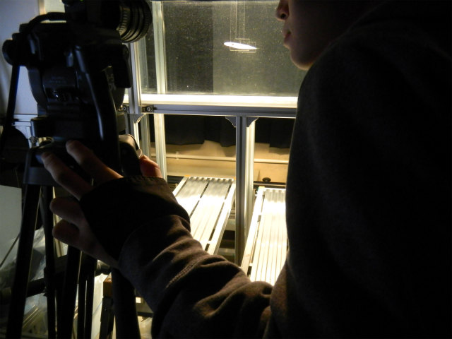

Table of contents
Test section： 2100 x 500 x 500 (mm)
Maximum speed： 200 (mm/sec)
Maximum deviation： 1.9% (Except for wall, 50mm)
Intensity of turbulence： 2.0% (Except for wall, 100mm)
Date of manufacture： 1986 Sept.
Design director： Tadashi Kushiyama
Designer & Constructor： Shigeru Murata Hitoshi Yoshioka
|

Test section： 1000 x 300 x 400 (mm)
Maximum speed： 100 (mm/sec)
Intensity of turbulence： 2.0% (Except for wall, 50mm)
Date of manufacture： 2013 Sept.
Design director： Yohsuke Tanaka
Designer & Constructor： Yousuke Hirano Yoshitaka Miyake
|
 Company： Cyberware Laboratory
Company： Cyberware Laboratory
Product name： Color 3D Digitizer
Model number： 3030RGB/PS
|
Company： Hi-Tech Electronics Pte Ltd
Product name： MotionPro
Model number： HS-1
1280 x 1024 Resolution CMOS Sensor
Up to 650 fps at full resolution / 35,000 fps at reduced resolution
Up to 4GB of storage capacity
|  Company： Sony
Company： Sony
Product name： 1/3" Monochrome Progressive Scan Camera
Model number： XC-55
659 x 494 Resolution Progressive Scan CCD Sensor
Up to 60 fps (Interlaced) / 30 fps (Non-Interlaced)
Size: 29 (w) x 29 (h) x 67 (d) mm, 110g
|
Company： SOC
Product name： He-Ne Laser
Model number： GLG5800
|
Company： B&W Tek, Inc.
Product name： Diode Pumped Solid State NIR Laser
Model number： BWR
Near Infrared Nd:YVO4 lasers
Modulation input for up to 20KHz
|
Company： QUANTUM DESIGN JAPAN
Product name： Green Laser Module
Model number： GLM-CW-030A
Wave length 532nm
Output 20mW
|
 Company： FLIR
Company： FLIR
Product name： Thermography
Model number： FLIR i5
|
 Company： Original Mind
Company： Original Mind
Model number： mini-CNC PRX 1510
Stroke： 150mm(X axis) × 100mm(Y axis) × 88mm(Z axis)
Maximum feed speed： 1,000mm/min
Maximum rotational speed： 800~6,000r/min
Date of manufacture： 2011 Sept.
Assembly： Yousuke Hirano Tokunaga Ikufumi
|
© Measurement System Laboratory, Kyoto Institute of Technology.

|